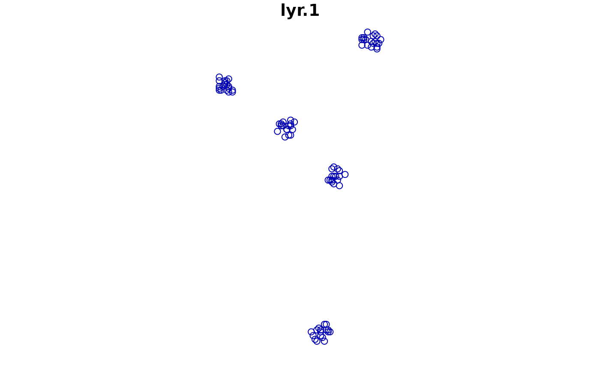
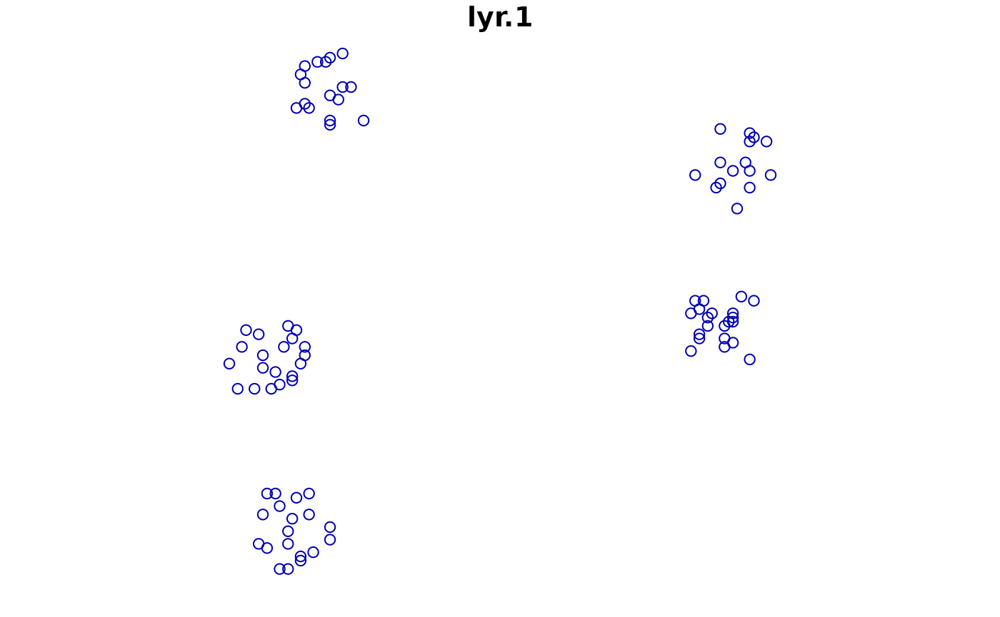

Sampling.RmdLet’s start by attaching the necessary packages and setting the seed.
Next, we define the raster grid to sample points/locations from.
rast_grid = terra::rast(xmin = 0, xmax = 200, ymin = 0, ymax = 200,
ncols = 200, nrows = 200)Alternatively, we can read a raster from a file.
The simsam package supports several types of
sampling, including jittered, clustered, and random with the
sam_field() function. All these types of sampling require
the rast_grid object, the number of samples to create
(size), and the type of sampling (type).
Type-specific options are passed via the type_opts list
parameter.
The jittered sampling is a regular sample moved by an amount of
noise. The amount option in type_opts controls
the amount of jitter. Importantly, this sampling type ensures that all
the samples fall within the sampling window.
sample_j1 = sam_field(rast_grid, size = 100, type = "jittered", type_opts = list(amount = 5))
plot(sample_j1)
sample_j2 = sam_field(rast_grid, size = 100, type = "jittered", type_opts = list(amount = 20))
plot(sample_j2)The clustered sampling creates samples forming groups of points with
similar locations. The outcome is controlled by the
nclusters and radius options in
type_opts, where the former controls the number of clusters
and the latter the radius of the buffer around each cluster.
sample_c1 = sam_field(rast_grid, 100, "clustered", type_opts = list(nclusters = 5, radius = 5))
plot(sample_c1)
sample_c2 = sam_field(rast_grid, 100, "clustered", type_opts = list(nclusters = 5, radius = 10))
plot(sample_c2)
Random sampling creates samples with no spatial structure.
Moreover, the sam_field() function can be used with
additional arguments passed to the terra::spatSample()
function, when the type is not specified. In such cases,
the method argument can be used to control the sampling
method, e.g., method = "regular" or
method = "random" and the exhaustive argument
to sample only from not NA areas in the input raster.